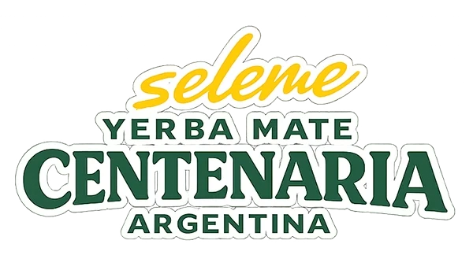
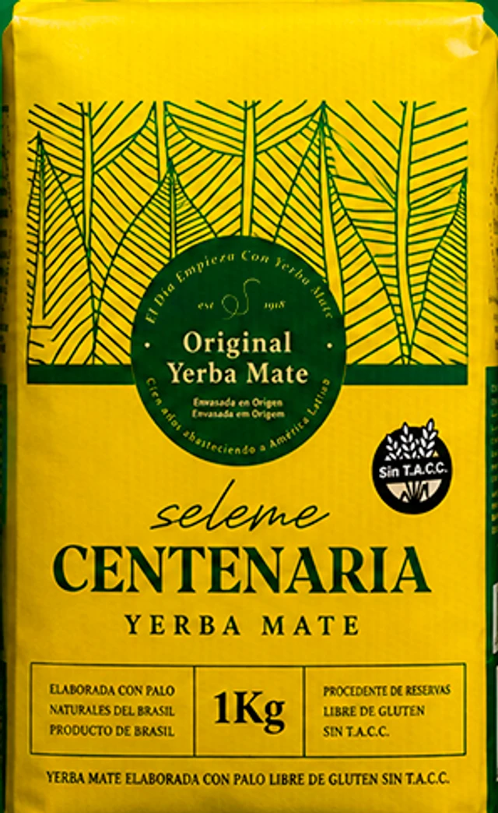
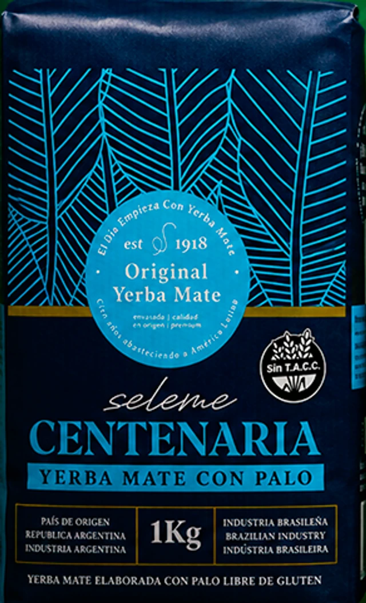
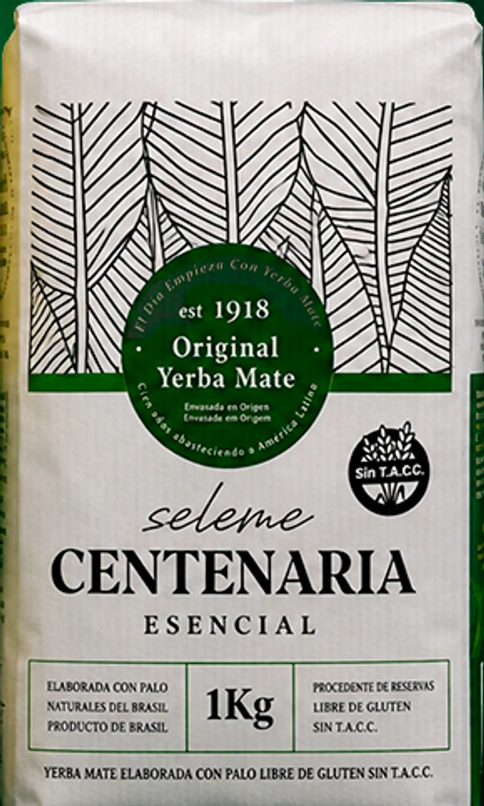

Comprala online
Envíos a todo el país con Andreani, Correo Argentino, OCA y Vía Cargo. Retiro en CABA, Córdoba, Rosario y Santa Fe. Entre 3 y 7 días hábiles desde que se acredita el pago.
Ir a la tiendaSeleme Centenaria
Cargando: 0 por ciento

Yerba Mate Desde 1918
Directamente del corazón de la región donde crecen las plantas de yerba más sabrosas del planeta. Un sabor suave, dulce y bien equilibrado.
Nuestra esencia
El mate no se toma: se comparte. Es la primera ronda de la mañana, la excusa para juntarse, el compañero de las charlas que no tienen apuro. En cada cebada hay un ritual que nos une desde hace generaciones.
Por eso hacemos Seleme Centenaria: una yerba de calidad premium, con más de cien años de oficio detrás, para que ese momento tuyo sea siempre el mejor del día.
Desde 1918, en cada mate argentino.
01 Nuestra historia
Seleme Centenaria nace en 1918 de la mano de la familia Seleme, en el corazón de la región yerbatera del sur de Brasil, donde nacen y crecen las hojas más ricas del planeta. Hoy llega a cada mate argentino desde Gualeguaychú, Entre Ríos.
1918
Comienza la historia. La familia Seleme funda el oficio de elegir y elaborar la mejor yerba, hoja por hoja.
+100
Años abasteciendo a América Latina, con la yerba elaborada y envasada en origen, calidad premium.
Hoy
Una línea completa que combina tradición, sabor y una identidad de marca inconfundible.
02 Del yerbal a tu mate
Elaborada con hojas nativas seleccionadas, procedentes de reservas naturales del sur de Brasil, y envasada en origen. Un padrón uruguayo de molienda fina y alto contenido de hoja, que da un mate suave, naturalmente dulce y sin acidez.
Por qué es distinta
03 Nuestra línea
Tres variedades pensadas para cada gusto y cada momento, con el sabor característico de Centenaria y presentaciones de 500 g y 1 kg.

Padrón uruguayo la clásica
La de siempre. Padrón uruguayo de molienda fina y alto contenido de hoja: sabor suave, naturalmente dulce y sin acidez. Ideal para un mate largo y equilibrado, de la primera a la última cebada.

Mistura de dos padrones
Mistura entre el padrón uruguayo y el argentino, con un sutil agregado de palos que suaviza el cuerpo manteniendo el sabor característico de Centenaria.

Blend con carácter
Un blend irresistible y con carácter, con las propiedades que brinda la fibra de la hoja de yerba mate nativa. Lo esencial está en tu mate.
Perfil de sabor
De lo más suave a lo más intenso, en Centenaria hay una yerba para cada paladar. Usá esta guía para encontrar la tuya.
04 Por qué elegirla
Acompaña tus mañanas y tu concentración a lo largo del día.
Propiedades naturales de la hoja de yerba mate.
Libre de gluten, apta para toda la familia.
Molienda fina y alto contenido de hoja: más cebadas por mate.
Suave y equilibrada, para tomar todo el día.
Envasada en origen, con más de 100 años de oficio.
Del desayuno en la cancha a la playa: donde va un argentino, va Centenaria.
05 El ritual
01
Llená el mate hasta tres cuartos con Centenaria. Tapalo con la mano, dalo vuelta y agitá suave para que el polvo quede arriba.
02
Volvé el mate a su posición dejando la yerba en pendiente. Así se forma el hueco donde va la bombilla.
03
Humedecé el sector más bajo con agua tibia y esperá un momento. Esto protege la yerba y hace que dure más lavados.
04
Tapá la punta con el pulgar e insertala en el hueco húmedo, sin revolver, hasta el fondo.
05
Agua a 70–80 °C (que no hierva) siempre sobre el mismo lado. Cebá parejo y a compartir la ronda.
Tip Centenaria: nunca uses agua hirviendo. El secreto de un mate suave y sin amargor está en la temperatura justa.
06 Dónde conseguirla
Envíos a todo el país con Andreani, Correo Argentino, OCA y Vía Cargo. Retiro en CABA, Córdoba, Rosario y Santa Fe. Entre 3 y 7 días hábiles desde que se acredita el pago.
Ir a la tiendaTodavía no llegamos a tu zona. Podés comprarla online con envío a todo el país — o, si tenés un comercio, ser vos quien la traiga.
¿Tenés un local? Sumate como punto de ventaContamos con precio competitivo para distribución y comercios. Escribinos y te enviamos la lista mayorista, condiciones y opciones de envío a todo el país.